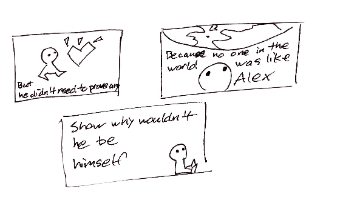

I began sketching with only a vague idea on what I actually wanted the site to look like. I knew that an effect way to get people to start thinking positively is by having them consider what they appreciate about themselves. Even though the questions are fairly simple, I feel like many people will struggle with them, so I experimented with the idea of a list of positive adjectives that the users can choose from. That way they have to at least choose one in order to contine.
The narrative I want to tell will be similar to a children's book, but its message is still very powerful. It's a simple story about what it feels to feel unimportant when you compare yourself to the rest of the world, and its art style reflects that simple message. In the story, the answers the user chose in the beginning will be used to reflect the main character, stregthening the bond between the two.